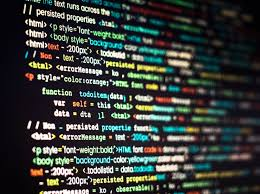
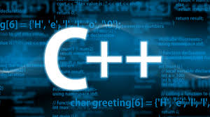

Leadership and Extracurriculars
- Girls Who Code (Vice President)
- Led and taught Python, AI, and web development workshops for elementary and middle schoolers
- Helped run meetings and coordinate club activities
- Fundraised and brought in guest speakers
- Promoted the club within the school to grow membership
- STEMxx (President)
- Run meetings and manage the club's social media
- Organize hands-on labs for members
- Put together informational slideshows to teach club topics
- Amnesty International (President)
- Led meetings and coordinated club activities
- Planned and organized AmnesTEA, a fundraising event with a live auction, food, tea, and other beverages
- Raised over $600 for donation
- Computer Science Club (Education Director)
- Created and taught two web development workshops and a Python workshop for club members
- Built CS lessons for members of all skill levels during workshop cycles
- Previously served as Fundraising Coordinator, managing T-shirt orders and production
- Business Club (Officer)
- Help run business competitions and related events for club members
- Assist with organizing and coordinating club activities
- The Start Small Movement (Co-Founder)
- Launched an initiative to support female-owned small businesses
- Provide social media support, content creation, and outreach
- Help with blogs, website planning, and other digital needs
- Visit The Start Small Movement Website
- Storming Robots
- Advanced robotics and algorithms program focused on problem-solving and deep logic
- Developed several C/C++ projects emphasizing recursion and search/sort algorithms
- Practiced writing efficient, well-designed code
- Science Olympiad
- Selected to compete at the regional level
- Events: CAD and Codebusters
- VSY (Vedic Samaj Youth) - Director of Web Development
- Maintain and develop the organization's website
- Taught and led a coding camp for elementary and middle schoolers learning Python
- WHEELS (non-profit)
- Summer intern: Published 4 blogs - different types of health awareness globally.
- Group Counselor (Summer 2025)
- Selected as a group counselor at a summer camp for elementary school aged children
- Led daily activities and supervised a group of campers
- Built close bonds with the kids and helped create a positive, fun environment


Honors & Awards
- Congressional App Challenge - Honorable Mention for SymptoScan, a medical symptom detection app
- Bioleague: Top 5% in New Jersey (14th/276)
- Chem League: 1st/366
- Voice of Democracy (VFW) - 1st place audio essay on patriotism - Read Essay
- Hackathons - 1st place award in BRHS Hacks (2024), Top 8 at Ridge Hackathon (2025), Top 10 at Ridge Hackathon (2026)
- Volunteering - 250 hour gold pin award at Ridge High School x 2
- Tae Kwon Do - Second Degree Black Belt, selected for leadership program as an instructor